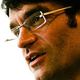
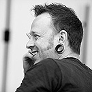
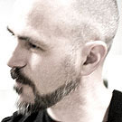

Our Speakers
Genevieve Bell
Amber Case

Anthony Dunne
Fabian Hemmert
Jonas Lowgren
Luke Williams
-
Kars
Alfrink -
Stephen
Anderson -
Angel
Anderson -
Christopher
Avore -
Julie
Baher -
Fred
Beecher -
Ryan
Betts -
Arlene
Birt -
Rachel
Bolton-Nasir -
Maggie
Breslin -
MJ
Broadbent -
Jason
Brush -
Elizabeth
Buie
-
Bill
Caemmerer -
Dana
Chisnell -
Giles

Colborne -
Abby
Covert -
David
Cronin -
Andrew
Crow -
Erik
Dahl
-
August
de los Reyes -
Katey
Deeny -
Pete
Denman -
Sebastian
Deterding -
Dustin
DiTommaso -
Christian
Drehkopf -
Kate
Ertmann -
John
Finley -
Leanna
Gingras
-
Jeff
Gothelf -
Jeff
Harrison -
Michael
Hawley -
Ingi
Helgason -
Rachel
Hinman -
Andrew
Hinton -
Greg
Hoy -
Lis
Hubert -
Abi
Jones -
Jonathan
Kahn -
Akshay
Kapur -
Dirk
Knemeyer -
Katie
Koch -
Jon

Kolko -
Thomas
Kueber -
Eva-Lotta
Lamm -
Michael
Lemmon -
Michal
Levin -
Dan
Lockton -
Francis
Luu
-
Dave
Malouf -
Jason
Mesut
-
Matt
Morphett -
Shane
Morris -
Søren
Muus
-
Scott
Nazarian -
Sami
Niemelä
-
Matt
Nish-Lapidus -
Tom
O’Rahilly -
Christina
Persson -
Andrea

Resmini -
Jonathan
Rez -
Dan
Saffer -
Angela
Schmeidel Randall -
Joshua
Sin -
Kel
Smith
-
Sam
Smith -
Michael
Smyth -
Sara
Summers -
Chui Chui
Tan -
Des
Traynor -
Frederick
van Amstel -
Jeroen
van Geel
-
Joan
Vermette -
Ariel
Waldman -
Adrian
Westaway -
Virgil
Wong -
Luke
Woods